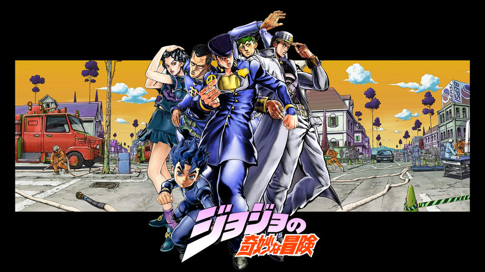

JoJo's Bizarre Adventure
Diamond is Unbreakable (ダイヤモンドは砕けない Daiyamondo wa Kudakenai) é a quarta parte de JoJo's Bizarre Adventure, serializada na Weekly Shōnen Jump de maio de 1992 a dezembro de 1995. O arco abrange 174 capítulos e é precedido por Stardust Crusaders.

Resumo
Em 1999, Jotaro Kujo chega à cidade de Morioh (杜王町, Moriō-chō) na província M (M県, Emu-ken) após saber que seu avô Joseph Joestar tem um filho ilegítimo enquanto compila uma lista de beneficiários. Ele esbarra em um calouro chamado Koichi Hirose antes dos dois encontrarem o jovem que Jotaro está procurando: Um estudante do ensino médio chamado Josuke Higashikata, cujo Stand Crazy Diamond lhe permite manipular a matéria de maneiras que incluem reparo e cura. Lutando contra Josuke após insultar inadvertidamente seu topete, Jotaro explica a natureza de Stands e que um deles é usado por um prisioneiro no corredor da morte chamado Anjuro "Angelo" Katagiri que escapou para Morioh. Josuke, sem saber, torna-se inimigo de Angelo, que mata seu avô antes que Josuke use seu poder para fundir Angelo em uma rocha. Mas Angelo usa seus momentos finais de consciência para revelar que alguém o atingiu com uma flecha que lhe deu seu Stand, Jotaro descobrindo que um artefato real estava possuído pelas forças de DIO. Josuke e Koichi eventualmente encontram o culpado, Keicho Nijimura, que inflige a Flecha em Koichi enquanto seu irmão mais novo, Okuyasu, segura Josuke. Josuke derrota Okuyasu e cura Koichi com Crazy Diamond, com Koichi desenvolvendo um Stand chamado Echoes. Após Keicho ser derrotado com seu motivo de criar usuários de Stand para criar alguém capaz de matar misericordiosamente seu pai, um subordinado mutante de DIO, Keicho é morto por Stand Red Hot Chili Pepper, que pega o Arco e Flecha. Okuyasu então se junta ao grupo de Josuke para vingar seu irmão, encontrando vários outros usuários de Stand que Keicho criou antes de finalmente encontrarem e derrotarem Akira Otoishi, usuário do Red Hot Chili Pepper, quando Joseph chega em Morioh. O arco e a flecha são levados sob custódia de Jotaro e tudo parece ter acabado no momento.
Logo depois, depois que Josuke tenta passar um tempo com Joseph enquanto eles encontram um bebê com um suporte de invisibilidade, o grupo encontra outros usuários do Stand, como o excêntrico artista de mangá Rohan Kishibe, o estudante do ensino médio Shigekiyo "Shigechi" Yangu e uma esteticista chamada Aya Tsuji. Koichi e Rohan mais tarde conhecem os fantasmas de Reimi Sugimoto e seu cachorro Arnold depois de tropeçar no misterioso Beco Fantasma, descobrindo sobre um serial killer que está à espreita em Morioh há anos. O assassino é um belo funcionário de escritório chamado Yoshikage Kira, que busca satisfazer sua obsessão por mãos assassinas enquanto vive uma vida pacífica e tranquila, usando a habilidade destrutiva de seu Stand Killer Queen para apagar qualquer evidência de seus crimes. Mas o assassinato de Shigechi acaba expondo-o durante uma breve batalha com Jotaro e Koichi que o deixou ferido quando Josuke e Okuyasu chegam. Kira escapa e força Aya a usar seu Stand para trocar identidades com um homem Kosaku Kawajiri, matando os dois enquanto assume a vida de Kosaku. O pai de Kira, Yoshihiro, um fantasma que usa seu Stand para viver em uma foto, usa um arco e flecha que recebeu anos atrás de Enya Geil para criar um exército de usuários de Stand para proteger seu filho, incluindo um gato moribundo que reencarnou como um Stand Gato-planta híbrida chamado Stray Cat que Kira adotou como animal de estimação.
O filho de Kosaku, Hayato Kawajiri, começa a suspeitar do impostor de seu pai e confronta Kira, apenas para ser assassinado com Kira em pânico antes de receber uma nova habilidade após ser perfurado pela flecha de Yoshihiro uma segunda vez que lhe permite reviver Hayato. Na manhã seguinte, Hayato descobre que Kira infligiu a ele a nova habilidade de Killer Queen, Bites the Dust, que destrói quem Hayato revela a identidade de Kira enquanto volta no tempo uma hora com o destino da vítima fixado. Depois que Rohan morreu em um loop e o grupo de Josuke no próximo, Hayato percebe que precisa forçar Kira a cancelar Bites the Dust antes que os outros sejam mortos e suas mortes se tornem permanentes. Hayato explora o conhecimento que adquiriu com o loop temporal para acordar Josuke cedo e fazer com que ele ouça Kira revelando seu disfarce.
Josuke enfrenta Kira em uma batalha campal, Okuyasu aparentemente morto enquanto Josuke e Hayato se refugiam em uma casa quando Kira combina os poderes de seu Stand com Stray Cat para criar bombas de projéteis invisíveis. Kira coloca a foto de Yoshihiro no bolso de Hayato para rastrear Josuke, apenas para ser levado a destruir seu pai antes que Okuyasu apareça a tempo de roubar Stray Cat e prejudicar ainda mais Kira. Enquanto Jotaro, Koichi e Rohan chegam com equipes de emergência respondendo às explosões, Kira tenta ativar Bites the Dust em um paramédico próximo em uma última tentativa de evitar sua derrota. Mas ele é parado por Jotaro com a ajuda de Koichi, jogado no caminho de uma ambulância que chega e acidentalmente esmaga seu crânio. O fantasma de Kira acaba no Beco Fantasma e é confrontado por Reimi, que o arrasta para um destino desconhecido por mãos espectrais. Com a missão cumprida, Reimi dá as últimas despedidas do grupo e segue para a vida após a morte. No dia seguinte, Josuke se despede de Jotaro e Joseph, que deixam Morioh quando o verão de 1999 chega ao fim.